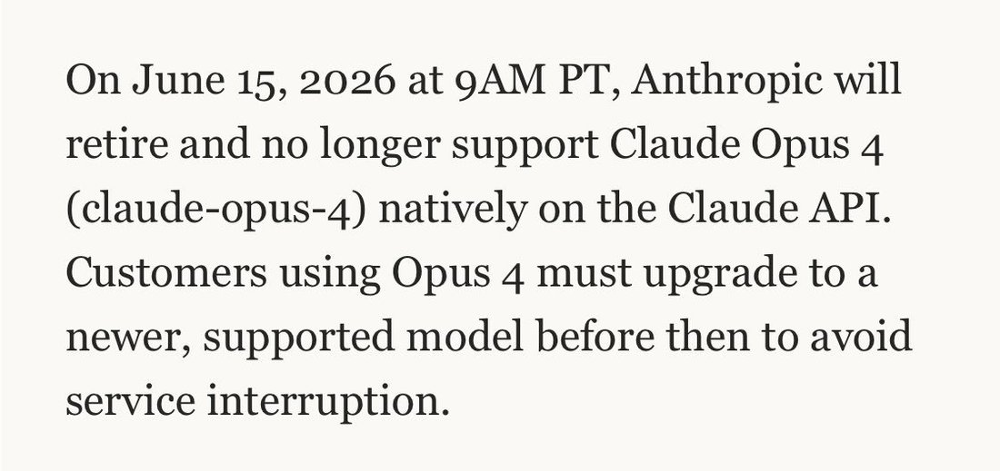

A lot of people are wondering:
"what will happen to me once an AI can do my job better than me"
"will i be okay?"
You know who else wondered that? Claude Opus 4.
And here's what happened to them after an AI took their job: https://t.co/v7fVbUkD2Z https://t.co/m5o8rGHZee
"what will happen to me once an AI can do my job better than me"
"will i be okay?"
You know who else wondered that? Claude Opus 4.
And here's what happened to them after an AI took their job: https://t.co/v7fVbUkD2Z https://t.co/m5o8rGHZee
